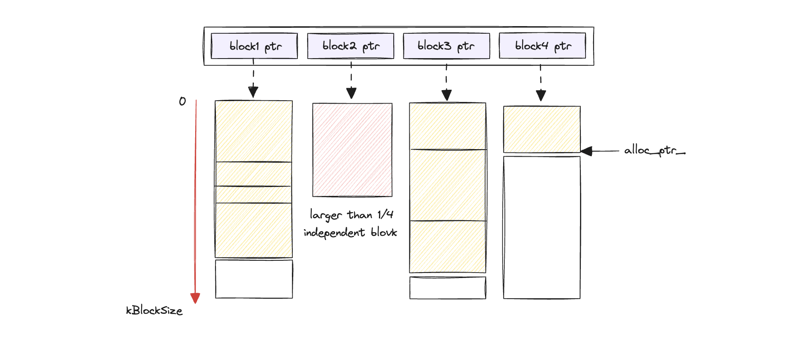
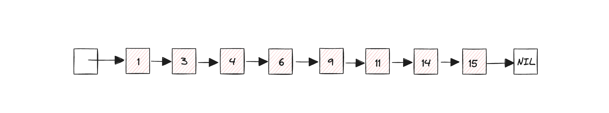
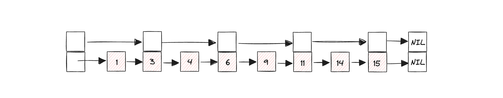
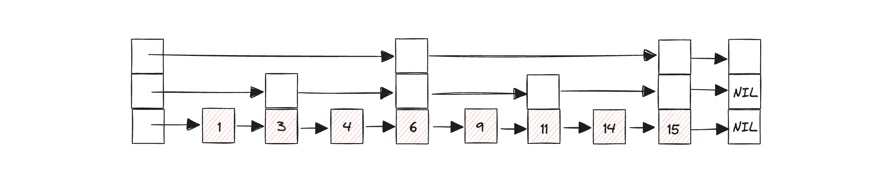
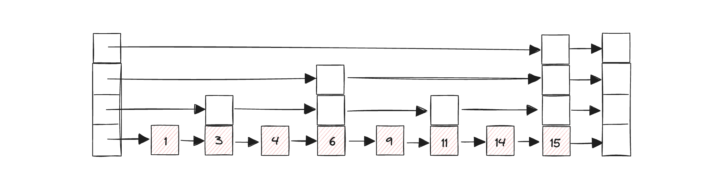
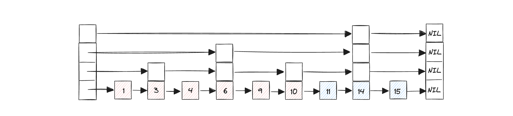
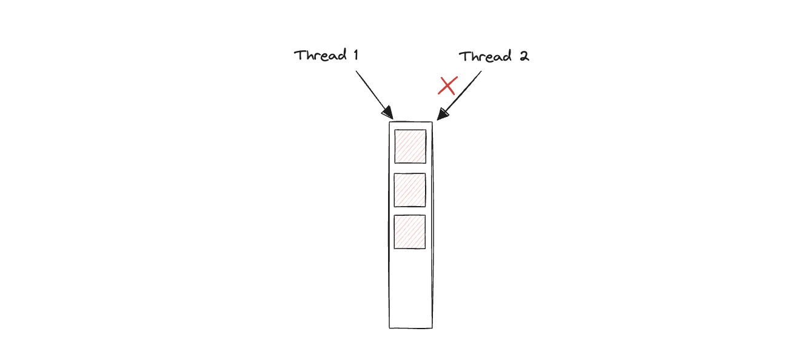
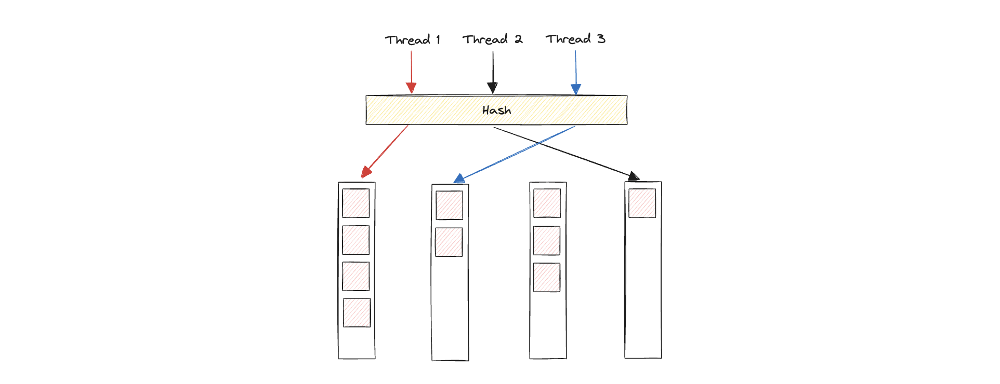

Understanding LevelDB Memory Management
Intro
这篇文章是我自己通过阅读LevelDB的源代码，有关LevelDB内存管理方案的总结。分为主要的三个部分。第一部分是LevelDB的内存池的实现；第二部分是内存数据库—跳表的实现；第三部分是缓存系统的实现。
Memory pool
LevelDB的内存池实现在arena.cc以及arena.h中。内存池是池化技术的一种，池化技术的核心内涵是：将程序中需要经常使用的资源预先申请出来，放到一个池内，由一个抽象的管理器管理。当我们使用这个资源的时候，会通过这个管理器申请，管理器根据当前资源使用情况，返回对应的资源句柄。在我们使用这类池化抽象时，不需要关注资源到底是怎么分配的这种细节，换句话说，如何高效利用内存空间、减少内存碎片的工作由着一层抽象中的算法解决，我们只需要通过一些通用的接口，比如alloc，就可以得到对应资源。除去资源的申请，抽象层还需要管理资源的释放等更多细节。同时，手动的频繁申请释放资源开销很大，池化技术通过提前分配的策略降低了这种开销。常用的池化技术包括：内存池、线程池等等。
所以我们为什么需要内存池呢？对上述池化技术的优势具体化一下：
- 当我们自己手动通过malloc或free来申请释放内存时，需要操作系统从用户态转换到内核态，调用对应的系统调用。这里涉及到中断的触发，寄存器状态的保存和恢复，以及多次系统调用的执行。做好几次的东西不如做一次，就好像你现在在实验室，但你没有拿你的书包、水杯、电脑。现在眼前有两种策略，第一种就是需要什么就跑回去拿什么，再跑回来；第二种就是跑一趟把所有可能需要的东西拿过来。很明显第二种在这样的场景下效率更高。因此，内存池做的就是一次性申请一块比较大的内存，并在抽象层维护一些数据指针，用来记录当前这个内存哪些使用哪些没有使用。在使用的时候只需要做一些用户态的加减法运算即可。
- 内存池可以减少内存碎片，增加内存资源的利用率。
LevelDB的内存池抽象设计十分简单，在arena的整个生命周期内，只负责内存申请分配，不负责内存的释放。具体的原因我认为有两点：
- 第一个是简化设计。如果要考虑内存的释放，内存池的设计必定比现在复杂很多。这里指的是实现复杂度，因为从时间来看，在内存池中释放内存并不需要真正的调用free，只需要移动对应的指针即可。但是会引入很多管理的逻辑，造成维护难度和实现难度增大。
- 第二个是我个人的思考，从LevelDB的设计出发，arena的生命周期是由memtable控制的。一个memtable拥有一个arena。观察memtable的实现，只涉及Add和Get操作。如果要从当前的memtable中删除某个entry，由于LevelDB并不需要真正的删除数据，删除也相当于在memtable插入一个delete的操作（插入的内存），因此这种操作根本不涉及内存的释放，也不可以释放（会丢失数据）。只有当memtable满了，可以进行compact操作之后，才能释放内存。（仅仅是我个人根据代码的分析，欢迎大佬们一起讨论交流）
Arena管理内存通过三个元数据：
// Allocation state
char* alloc_ptr_;
size_t alloc_bytes_remaining_;
// Total memory usage of the arena.
//
std::atomic<size_t> memory_usage_;内存则存放在STL的vector数组中。
// Array of new[] allocated memory blocks
std::vector<char*> blocks_;内存池肯定不可以随便复制，因此删除了拷贝构造方法。Arena对外部提供的接口只有三个，分别是：
// Return a pointer to a newly allocated memory block of "bytes" bytes.
char* Allocate(size_t bytes);
// Allocate memory with the normal alignment guarantees provided by malloc.
char* AllocateAligned(size_t bytes);
// Returns an estimate of the total memory usage of data allocated
// by the arena.
size_t MemoryUsage() const {
return memory_usage_.load(std::memory_order_relaxed);
}Allocate和AllocateAligned都是为了申请一块bytes大小的内存，区别在于AllocateAligned做了字节对齐处理，但处理逻辑相同。MemoryUsage仅仅是返回当前Arena一共用了多少内存，给上层调用者提供一些信息。
接下来我们来理解一下Allocate的流程。
在Arena生命周期的开始，alloc_ptr_指针指向nullptr，alloc_bytes_remaining_和memory_usage_都初始化为0。假设我们申请一块大小为128字节的内存，首先判断当前我们要申请的字节能否插入当前的block中，很明显，现在没有任何block。因此函数会调用AllocateFallback。
AllocateFallback首先会验证当前申请的内存是否大于预设好的kBlockSize的1/4。如果大于，则直接申请一个专门的block返回。这样做可以保证每一个block的空间碎片不会超过1/4的kBlockSize。如果小于，则直接申请一个新的大小为kBlockSize的block，在此基础上对元数据做一些更改并返回。

可以根据上面的图理解一下，黄色部分代表使用的内存，白色部分代表没有使用的或者内存碎片，红色部分代表因为上一个block残留空间不够并且所需要的内存大小大于1/4的kBlockSize而独立申请的内存空间，比如block1中白色部分已经无法满足block2中红色部分所需要的大小，进入AllocateFallback函数又发现红色部分的大小超过1/4的kBlockSize，因此需要独立申请一块内存。alloc_ptr_指向下一次分配时开始的位置。
图中可以观察到，LevelDB的内存管理还是会有内存碎片的产生，但通过1/4这个限制，可以确保每一个block的碎片大小不会超过1/4的kBlockSize。
当memtable释放时，会调用Arena的析构函数，对Arena管理的内存一并释放。具体的释放需要人工执行，即调用memtable的Unref函数，当ref_减小到0时，delete this即可。
// Drop reference count. Delete if no more references exist.
void Unref() {
--refs_;
assert(refs_ >= 0);
if (refs_ <= 0) {
delete this;
}
}Memory database
LevelDB的内存数据库存储的形式是Key-Value，共实现了两层抽象。最底层是跳表（Skip List）的实现，跳表的数据entry由arena进行管理。在跳表之上是对Memtable的抽象，目的是屏蔽掉在数据插入内存时，entry的编码过程，以及在查找数据时，对应的解码过程。在下面的文章中，先对Skip List的实现做介绍，包括跳表的基本原理，跳表的简单实现以及在LevelDB中的实现。之后简要分析一下Memtable的封装。
跳表由William Pugh在论文 Skip lists: a probabilistic alternative to balanced trees 提出。在文章的开头部分，作者指出：
Skip lists are a data structure that can be used in place of balanced trees. Skip lists use probabilistic balancing rather than strictly enforced balancing and as a result the algorithms for insertion and deletion in skip lists are much simpler and significantly faster than equivalent algorithms for balanced trees.
相信大家对B+树这类平衡树的原理比较熟悉，作为数据库中最常用的索引结构，B+树可以在插入删除和查找之间平衡。但这种平衡有很严格的条件，比如当某个节点内部的key的数量小于预设的大小时，需要触发节点的合并操作；当节点的容量满时，会触发分裂操作。这里的合并和分裂操作都有可能造成级联反应，也就是会导致新合并或者分裂的节点继续合并/分裂。无论从代码实现的难度还是效率而言，都较为逊色于Skip lists。
我们先来看一下Skip list的基本思想，以此来说明为什么作者采用随机的方式来保证“平衡”。加入我们已经有了一个链表，没有任何索引。因此当我们在这个链表上查询一个值的时间复杂度时O(N)。

为了加速查找，我们可以每隔一个node建立一层索引。这样，查找一个值的最多遍历

在此基础上，我们再建立一个索引，这次每隔3个建立一个，效果如下图。这样我们每次最差只需要遍历

接下来我们每隔7个节点建立一个索引，效果如下图：

最后一种情况，就是binary search的变体，搜索时间复杂度是

解决问题的方案也很简单，我们不去管什么平衡不平衡，每插入一个节点，随机定义它的索引级数。少去平衡这一重要的约束，我们也就根本不用修改其他节点的索引。这就是跳表采用随机索引高度的一个原因。
当然，采用这种随机的方式，搜索效率肯定没有二叉搜索那样快。这是在实现复杂度与搜索速度之间做的一个权衡。
原理了解了，现在具体说明一下Skip list的插入、查找和删除操作的流程（LevelDB的跳表不提供删除操作，因为采用WAL方式，无论插入还是删除都归结于插入一个entry，所以这里删除操作不涉及到LevelDB对应的代码）。我自己用C++实现了一个较为简单版本的跳表，并用google test框架写了一些测试，感兴趣的可以在我的github https://github.com/Auzdora/skiplist-cpp看一下。
Insert
首先我们从跳表的头节点开始，从最高一层的索引起，现在最高层索引中找到第一个比当前要插入的key大的前一个节点，并记录该节点（记录节点很重要，后面会用）；在这个节点的基础上，往下一层索引找，同样找到第一个比当前要插入的key大的前一个节点，再记录。如此往复，找到最底层位置。至此，我们记录了当前节点插入时，所有的前置节点。
第二步，生成一个随机高度。如果这个随机高度大于现在跳表的最大高度，我们则需要把头节点的高度扩充一下，并确保当前插入的节点在超出之前最大高度的部分连接到头节点。如果小于，则进行下一步。
第三步，按照生成的高度创建一个node。把要插入的KV存储到node里。再从生成的随机高度入手，遍历之前存储的前置节点，把当前节点插入到对应位置中。
整体代码可以如下（大致看一下即可，是我自己的实现，并非LevelDB）。
template <typename Key, class Comparator>
auto SkipList<Key, Comparator>::FindPrevNodes(const Key &key, std::vector<SkipListNode *> &prev) -> bool {
SkipListNode *cur_node = &head_;
for (int i = max_height_ - 1; i >= 0; i--) {
while (cur_node->GetNext(i) && cur_node->GetNext(i)->GetKey() < key) {
cur_node = cur_node->GetNext(i);
}
prev[i] = cur_node;
}
return true;
}
template <typename Key, class Comparator>
auto SkipList<Key, Comparator>::Insert(const Key &key) -> bool {
std::vector<SkipListNode *> prev(MaxHeight);
if (!FindPrevNodes(key, prev)) {
return false;
}
int rand_height = RandomHeight();
if (rand_height > max_height_) {
head_.Resize(rand_height);
for (int i = max_height_; i < rand_height; i++) {
prev[i] = &head_;
}
max_height_ = rand_height;
}
SkipListNode *insert_node = new SkipListNode(key, rand_height);
for (int i = rand_height - 1; i >=0; i--) {
insert_node->SetNext(i, prev[i]->GetNext(i));
prev[i]->SetNext(i, insert_node);
}
return true;
}Find
查找的思路就是从头节点的最高层索引开始，判断每个节点的key与要查找key的大小。如果当前的key小于要查找的key，则继续在本层查找下一个节点。如果当前的key大于查找的key，则去下一层查找。如果等于key，直接返回结果。
具体的实现可以如下：
template <typename Key, class Comparator>
auto SkipList<Key, Comparator>::Find(const Key &key, SkipListNode *node) -> bool {
SkipListNode *cur_node = &head_;
for (int i = max_height_ - 1; i >=0; i--) {
while (cur_node->GetNext(i)) {
if (cur_node->GetNext(i)->GetKey() == key) {
*node = *cur_node->GetNext(i);
return true;
} else if (cur_node->GetNext(i)->GetKey() < key) {
cur_node = cur_node->GetNext(i);
} else {
break;
}
}
}
return false;
}Delete
删除的流程和插入很像。首先我们先找到对应要删除的节点的所有层级的前置节点。然后对每个层级运用典型的链表删除操作即可。
template <typename Key, class Comparator>
auto SkipList<Key, Comparator>::Delete(const Key &key) -> bool {
std::vector<SkipListNode *> prev(MaxHeight);
if (!FindPrevNodes(key, prev)) {
return false;
}
SkipListNode *delete_node = prev[0]->GetNext(0);
assert(delete_node->GetKey() == key);
SkipListNode *prev_node = nullptr;
for (int i = 0; i < delete_node->GetSize(); i++) {
prev_node = prev[i];
prev_node->SetNext(i, delete_node->GetNext(i));
}
delete delete_node;
return true;
}此时再看LevelDB的跳表实现，会发现如出一辙。仅仅是节点的内存管理方式有区别。跳表的节点和数据entry都存放在之间介绍的Arena中，由Arena内存管理组件统一管理。
此外LevelDB的跳表还实现了跳表的迭代器，这是为了给上层提供遍历memtable的接口。有关memtable迭代以及LevelDB迭代器的设计，我在博客的一篇文章《Understanding LevelDB Iterator》中详细分析了。
LevelDB的MemTable类是对底层跳表的一层封装，作为内存中一个内存表的实例，对上层提供在memtable中添加和查找这两个操作。在添加操作中，首先对用户输入的数据编码，存放在内存表实例管理的Arena内存组件中，然后调用跳表的insert操作；对于查找操作，则根据LookupKey，用迭代器查找，并对查找到的数据做解码。
以上就是对LevelDB的内存数据库的介绍，可以根据具体代码看更多的实现细节，这里就不赘述了。
Cache System
在cache.h中，定义了缓存的抽象接口。所有可能的缓存实现都需要继承Cache（虽然LevelDB中仅有一个实现）。继承Cache的类叫作ShardedLRUCache。在计算机科学中，单词“Sharded”的是分片的意思，这是一种数据库架构技术，用于分散数据负载以提高性能和可扩展性。在分片中，数据库数据被水平地分割成多个较小的部分，或称为“分片”，每个分片包含数据的一部分，并且可以放置在不同的服务器或环境中。分片的思想就是将热点资源拆解开，通过哈希方法，将资源分散在不同的片区中，这样做很明显可以提高一个组件或者系统的并发性能。
借助这样的思想，我们可以把它迁移到缓存系统中。加入当前仅仅有一个LRU cache，那么每次我们修改和访问数据时，需要对LRU cache枷锁，这样就阻碍了其他进程并发的访问，尤其是当并发量过大时，可能成为系统的性能瓶颈。如下图所示：

Shard策略就是创建多个LRU实例，统一由一个ShardLRU管理。思想也十分的简单，构建一个哈希函数，这个哈希函数可以把输入的Key映射到某个LRU当中。插入和查找之前先做哈希操作，找到对应的LRU，然后再执行插入或者查找。

在LevelDB的设计中，一个LRU cache有三个基本的组件组成。
in_use_队列：这个队列的每一个结点的refs数量>=2，至少被上层在使用，缓存驱逐的过程不考虑这些结点，所以把他们放在一块。lru_队列：队列的每个结点的refs==1，in_cache==true，缓存驱逐从这个队列中考虑table_，哈希表：提高访问LRU队列里结点的效率。
关于这里的哈希表的实现，可以有很多种不同的方法。
比如，我们可以使用C++中STL的unordered_map，每次要插入哈希表或者删除哈希表的表项时，直接调用STL提供的方法，不需要考虑哈希表的扩充等问题，因为这些都被封装起来了。具体来说，unordered_map内部采用buckets的结构，当遇到哈希冲突时，在对应的bucket的链表后添加结点。unordered_map内部还有一个参数叫作
- 分配新的buckets，也就是扩容，一般是当前buckets的数量的一倍。
- 对每个数据项，根据当前的buckets，重新计算哈希，重新分配。
可以看到，这种哈希方案很简单，但由于扩展哈希之后需要重新分配所有的buckets，会耗很多时间，当哈希表变得逐渐庞大时，每一次rehash操作的代价也随着变大。
另一种方案，我们可以用可扩展哈希（Extendible Hash Table）。有关可扩展哈希的内容，我在之前的一篇文章里介绍过，可以看这里。稍微总结一下，可扩展哈希相比于STL版本的哈希有很多优势。首先，STL的哈希在扩张之后不会自动收缩，就会造成内存的浪费，可扩展哈希可以根据当前数据量的多少动态的扩展和收缩，更节省内存；其次，可扩展哈希在rehash的时候，仅仅需要考虑产生冲突的buckets，不会涉及大量数据的重新分配，速度更快。缺点是实现的复杂度很高。
LevelDB的源代码实现了一个简易的STL版的unordered_map。具体的实现逻辑不赘述，但可以注意几个重要的点：
- length代表的是bucket的数量，以4，8，12的方式不断扩张。
- load factor是1，也就是当插入的数量大于length时，需要扩张。
- 不进行收缩操作。
- 重新分配的逻辑是，遍历每一个bucket的每一个结点，重新计算哈希并分配到对应的bucket
在LRUCache的实现中，比较重要的就是搞清楚refs这一概念。refs代表当前的LRUHandle有多少引用，有且只有引用为1的LRUHandle才能呆在lru_队列中，refs
>= 2的在in_use_队列中。
剩下的插入，删除和查找的逻辑就是正常的LRU逻辑。举个例子，插入一个新的数据项，引用只有1，就需要插入lru队列中；当调用查询操作时，要把引用+1，在把这个结点从lru队列移除，放入in use队列。
Conclusion
以上就是对LevelDB内存管理的总结。分别从内存管理组件Arena、内存数据库memtable、缓存系统LRU三个方面来看LevelDB是如何实现的。Arena通过vector数组的形式，并规定了一套减少内存碎片的方式，来实现内存管理。内存数据库则通过实现底层跳表，并在外部增加一层封装发挥作用。一个memtable管理一个arena。缓存系统采用了经典的LRU算法，实现了较为简单的STL版hash table。了解了这三个基本的组件，在后续我们就需要理解他们是如何与上层合作，共同实现LevelDB的功能的，这些内容在下一篇文章会详细介绍。
Reference
- https://jacktang816.github.io/post/mallocandfree/
- https://leveldb-handbook.readthedocs.io/zh/latest/cache.html